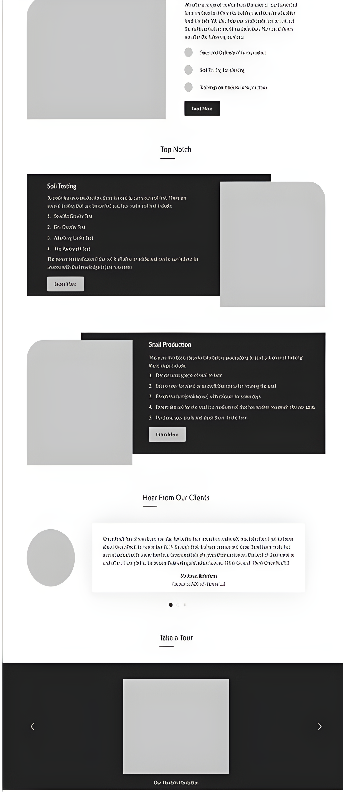
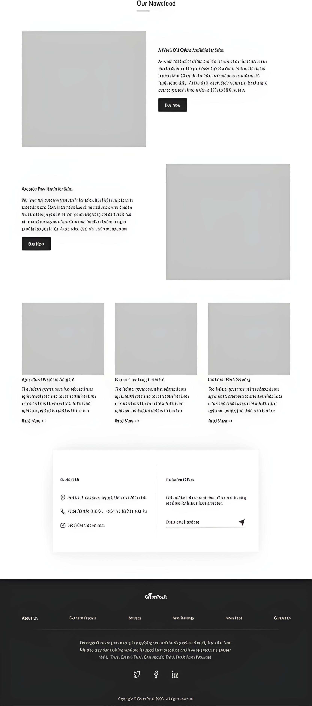

Project Overview
About GreenPoult
Greenpoult is a website where fresh foodstuffs straight from the farm
are sold at reduced cost and farmers are taught on the latest trend
of modern agricultural practices in order to maximize their optimal
yield of production. Greenpoult also provide an avenue for farmers
to test their soil for available nutrients and soil borne diseases
before planting.
Problem Statement
Everybody wants to eat fresh farm produce (fresh food) in order to
stay healthy. Most times, the foodstuffs bought from the market are
not always fresh which could be due to the heat of the bulk
foodstuffs that occurs when transporting them from the farm to the
market or even the failure of the farmer to test the soil for
available nutrients and soil borne disease before planting. Hence,
this could lead to food waste and the farmers not having an optimal
yield. This is where the desire for the project arises.
My Design Process
Discover
This was the first process I carried out in the design process and
it involved the following activities:
- Design strategy
- Market strategy
- Competitor analysis
Define
In this second stage of my design
process, I carried out the following
activites as listed below:
- Data gathering
- User research
- User persona
- Empathy mapping
Ideate
The ideate prcoess of my design
process gave a vivid structuring
and mappring to the product.
- Brainstorming
- User flow
- Information architecture
Visual Design
The research and structuring was
brought to life visually and tested
to solve the problem at hand.
- Wireframe
- Style guide
- High-fidelity design
My Design Strategy
My design strategy was aimed at striking a balance between business goals and creative solutions
Business Goals
- To make fresh foodstuffs (farm products) available to users.
- To help farmers attract the right market and achieve maximum yield
- To minimize Total food production wastage.
Platforms
- Web Application
- Mobile Application
User Research
I carried out user research inorder to understand
the users’ challenge and assumptions, redefine
the problem and create innovative solutions to
prototype and test.
User Interviews and Online Survey
Interviews and surveys are aimed at getting an indepth understanding
of how the targeted users would engage the product, and also determine
their pain points, challenges, features they would love to have on the
platform and the best solution to their problems.
Quantitative Research Analysis/Observation
The United Nations’ Food and Agriculture Organization predicts that in the
next 40 years, global food production will need to increase by 70% in order
to prevent massive famine as food is wasted on a daily basis. Meeting the
demand for food will mean addressing the challenge of under-nourishment and
other factors that contribute to food wastage. Food is wasted throughout
the supply chain. when food is spoilt before harvesting or when it is being
stored, packed or transported; it all accounts for food wastage. Food waste
can also be caused by high temperatures and poor storage. Agricultural waste
is one of the major problems most farmers have, followed by high cost of
production which has led to so much loss. Most farmers fail to employ the
right farm practices in their planting, hence they do not produce very fresh
food, while some fail to test their soil before planting, thereby producing
food that are not healthy to humans. Everybody wants to be able to buy and
enjoy fresh foodstuffs always.
Inference From Research and Observation
After analysing the research results and observations made,
I came up with the following deductions
- Over 12% of a country’s population are under nourished.
- 30% of total food production is wasted.
- Over 30% of farmers are not able to maximize their optimal yield of production.
The Solution
Product Page
This page would contain all fresh farm produce available and give
the users access to search for a particular produce and make purchase
Newsfeed Page
This Page of the web application would contain the latest trends and news
on agricultural and farm practice.
Top Notch
This provides training and assistance to farmers or those who want to get into farming/planting
The Visual Designs
Product Page
Greenpoult always supplies ever green and fresh farm produce, directly from the farm, thus users can always search for ttheir desired products and make a purchase of any of the fresh farm produce at any time.
Newsfeed Page
The 'Newsfeed' page of the website keeps users, especially farmers with the latest update on farming and agricultural practice.
Top Notch
The 'top notch' section of the website provides the users with basic agricultural training and users can request for assistance or training in a particular area of agriculture.
Low Fidelity Wireframe


Final Thoughts
The best digital products are not just based on the aesthetic and visual appearance of the product only, but also on the functionality of the product and the experience it gives to the users.
I love creating productive and digital solutions that meets the human needs, even as the world continues to evolve into a technological element.
Thank you for reading!